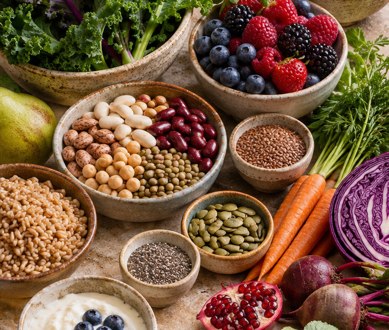

Your gut microbiome is home to trillions of bacteria, and every meal is a message to them. The question isn't whether you're feeding them. It's what.
Most people eat plenty of calories and surprisingly little of the one thing their gut bacteria actually want: fermentable fiber. The average intake in most Western countries sits at roughly half the recommended 25–30g per day. Your microbiome notices.
Here's why fiber type matters more than fiber quantity.

Not all fiber is the same conversation
Broadly, fiber does two jobs. Some of it is bulk — it adds volume, holds water, keeps things moving. Some of it is fuel — it travels to the colon intact and gets fermented by bacteria into short-chain fatty acids like butyrate, propionate and acetate.
Those short-chain fatty acids are not a footnote. Butyrate is the primary energy source for the cells lining your colon. It helps maintain the intestinal barrier, supports immune regulation, and has been linked to reduced inflammation. You don't absorb it from food; your bacteria make it for you, from fiber.
So the goal isn't just "more fiber." It's the right fiber.
Meet the two types of fiber that do the heavy lifting
Inulin is a prebiotic fiber found in chicory root, Jerusalem artichoke and onions. It's selectively fermented, meaning it preferentially feeds beneficial strains like Bifidobacterium and Lactobacillus rather than the ones you'd rather not encourage. Inulin supplementation has been shown to increase stool frequency and support digestive comfort, and it's one of the better-studied prebiotics in the human diet.
Resistant maltodextrin is a soluble fiber that resists digestion and arrives in the colon intact. It's gentler than inulin for people who are sensitive to fermentation, and it brings a separate benefit: research shows it supports a healthier post-meal blood glucose response by slowing carbohydrate absorption. In the EU, resistant maltodextrin carries an authorised claim for reducing the post-prandial blood glucose rise, at around 8g per meal.
Together, they cover more ground than either one alone. Inulin ferments fast and feeds specific strains. Resistant maltodextrin ferments more gradually, supporting satiety and glucose response along the way.
The second fiber effect: slower is better
Viscous fibers like glucomannan add a physical dimension. They thicken gut contents, which slows gastric emptying and the absorption of sugars. That translates into steadier energy, fewer crashes, and a longer window of feeling satisfied.
So you're getting two distinct benefits from the same category of ingredient: fuel for the microbiome and a slower, calmer digestive pace. That combination is hard to get from a multivitamin and easy to get from a fiber-rich snack.
How to build a fiber habit that sticks
The most common fiber mistake is going from 10g to 35g overnight. That's how you end up bloated, gassy and convinced fiber hates you.
Instead:
- Ramp up gradually. Add one fiber-rich snack or side per day, not all of them at once.
- Drink water. Fermentable fiber needs hydration to work well and feel comfortable.
- Diversify. Different fibers feed different strains. Rotate sources.
- Be consistent. Your microbiome responds to patterns, not one-off good intentions.
- Small daily inputs compound. That's the entire game.
Our take on this is a konjac jelly built around exactly that logic: konjac fiber for fullness, plus inulin and resistant maltodextrin to feed the right bacteria. One jelly, three types of fiber, no sugar crash. More about the JEL1 formula Explore Gut & Glow.